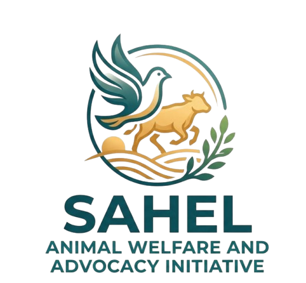

Battery cages are spreading
Northern Nigeria's layer sector is growing fast, and a rising share of hens are kept in battery cages — among the most painful conditions in animal agriculture.

Northern Nigeria · Farmed Animal WelfareSAWAI is building Northern Nigeria's first farmed animal advocacy movement. We work with the institutions that buy eggs at scale — starting with universities — so that producers have a commercial reason to move cage-free.
A fast-growing industry — and almost no one speaking up for the birds inside it.
Northern Nigeria's layer sector is growing fast, and a rising share of hens are kept in battery cages — among the most painful conditions in animal agriculture.
Farmed animal welfare has almost no advocacy presence in the region. There is no organised voice asking what happens to the birds behind the eggs.
Producers respond to buyers, not to awareness alone — and no institutional buyer in the North has yet asked for higher-welfare eggs.
We create demand for cage-free eggs from institutions that buy at scale — starting with universities. Student and staff networks already embedded on campus give us access to procurement decision-makers that outside groups simply lack.
Northern Nigeria's layer sector is growing fast, and a rising share of hens are kept in battery cages. Chronic confinement prevents hens from performing basic natural behaviours.
Farmed animal welfare has almost no advocacy presence in the region. Producers respond to buyers, not to awareness alone — and no institutional buyer in the North has yet asked for higher-welfare eggs.
We create demand for cage-free eggs from institutions that buy at scale — starting with universities — so that producers have a commercial reason to transition.
We work through student and staff networks already embedded on campus, which gives us access to procurement decision-makers that outside groups lack.
Students, catering staff and procurement officers build support from inside.
Administrations sign written cage-free egg procurement commitments.
Suppliers to those universities begin moving to cage-free production.
Hospitals, hotels and government canteens follow the same playbook.
Most hens in Northern Nigeria's growing layer sector are confined in battery cages, unable to perform basic natural behaviours. Producers switch when buyers demand it — so SAWAI creates that demand.
Through our student and staff network across Northern universities, we work with procurement officers and administrations to secure written cage-free egg commitments, and we map the regional layer sector to connect committed buyers with producers able to supply them.
Universities are our starting point. Hospitals, hotels and government canteens are next.
Livestock crossing the Sahel endure multi-day transport under extreme heat and are handled without basic welfare protocols. Once our cage-free pilot has shown results, we intend to develop practical handling and transit standards with regional livestock markets.
Four activities. A defined set of outputs. And a results chain we're prepared to be measured against.
The end goal isn't a signed letter. It's a region where the cage is no longer the default — and where the people who changed that live here.
We don't claim these are certainties. They're hypotheses — and we'll report honestly on each of them.
We're testing whether pressure from students, staff and caterers moves procurement.
We're testing whether regional producers can realistically meet cage-free demand.
We're testing whether signed commitments translate into what actually gets bought.
We will report honestly on each assumption — including when the evidence says we were wrong. Transparency is part of the method, not a footnote to it.
Secure and verify university cage-free commitments in Year One.
Take the playbook to hospitals, hotels and government canteens.
Develop practical handling and transit standards with regional livestock markets along the Sahelian corridor.
We're looking for university partners, funders, producers and advocates who want to build this movement with us. If you buy eggs at scale — or you want to help us reach the people who do — we'd like to hear from you.